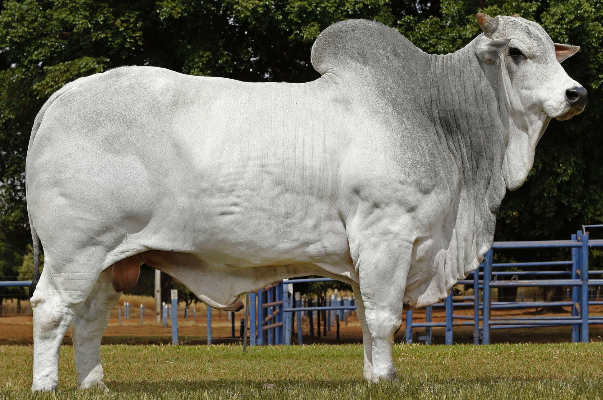
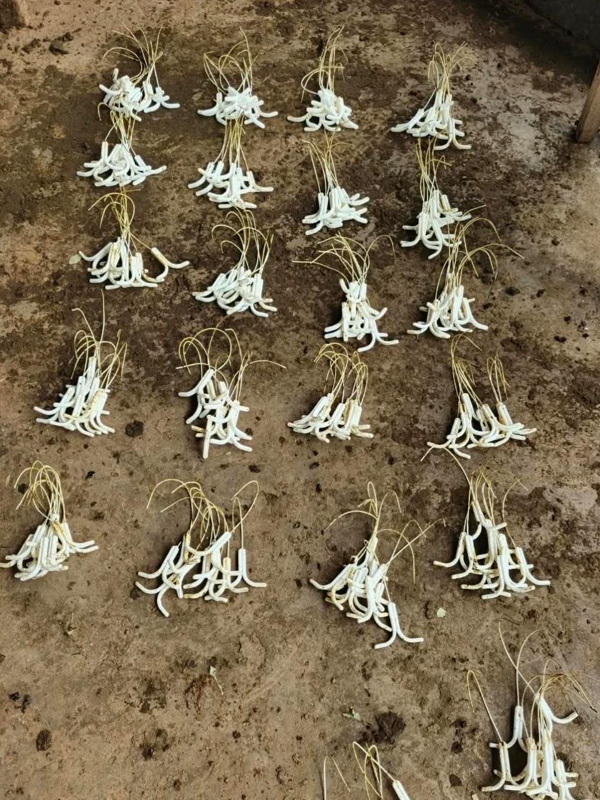
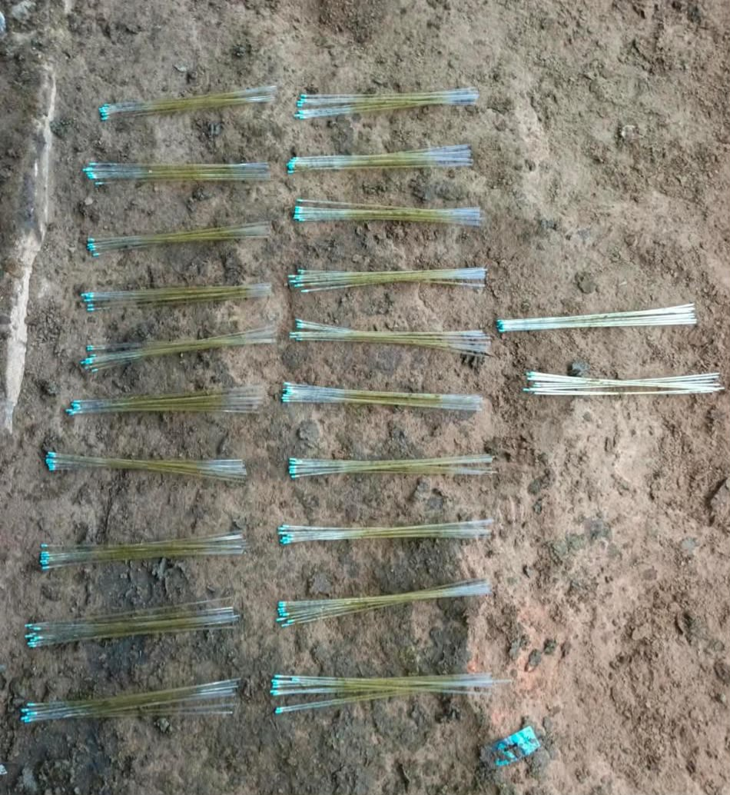
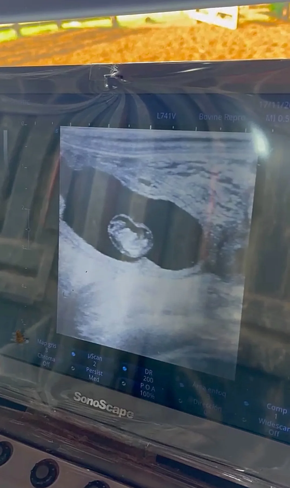
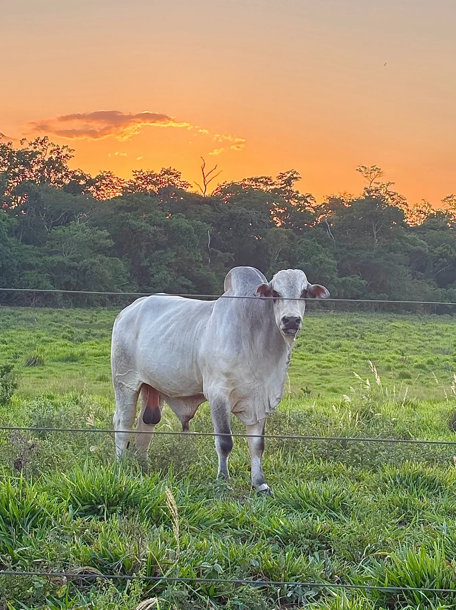
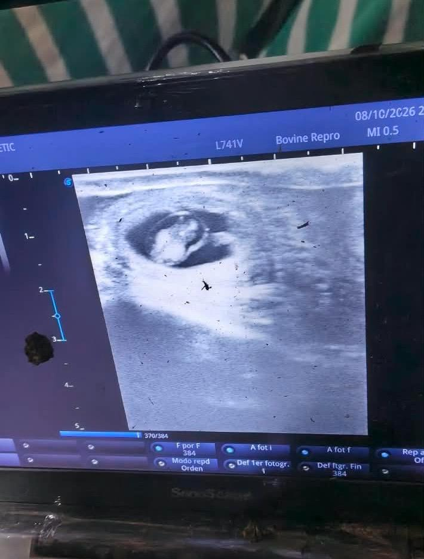

Preparación
Todo comienza con precisión.
Organizamos el material y verificamos cada elemento antes de iniciar el trabajo reproductivo.
Qué ofrecemos
Selección e inseminación para orientar el desarrollo de un hato más precoz, eficiente y productivo.
Inseminación
Con el objetivo de mejorar la genética, realizamos trabajos de inseminación utilizando pajuelas de toros seleccionados. Esta práctica permite buscar animales con mayor precocidad y eficiencia hasta alcanzar el peso de faena.

El proceso
Recorre el proceso: la imagen y la línea de progreso cambian a medida que avanzas por cada etapa.




Preparación
Organizamos el material y verificamos cada elemento antes de iniciar el trabajo reproductivo.
Inseminación
Trabajamos con pajuelas de toros seleccionados según los objetivos productivos del hato.
Diagnóstico
El control reproductivo y la ecografía ayudan a acompañar la evolución de cada etapa.
Selección genética
Evaluamos desarrollo, precocidad y adaptación para orientar las decisiones futuras.
En la hacienda
Material real del trabajo de inseminación y de los instrumentos utilizados durante el proceso.
